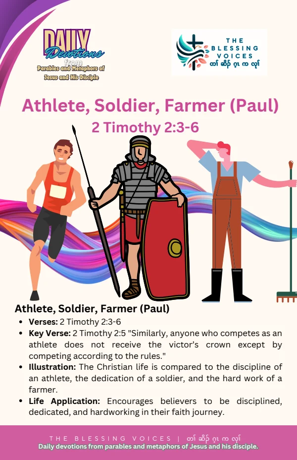

Introduction
Read this English paraphrase of the biblical teaching alongside the original companion booklet. Context notes, devotional applications, reflection questions, and prayer are study aids rather than additional biblical text.
The Bible Story
Second Timothy calls for sharing hardship as a good soldier of Christ Jesus. It compares focused service with a soldier who avoids entanglement in civilian affairs, speaks of an athlete competing according to the rules to receive a crown, and says that a hardworking farmer should have the first share of the crops. This is a paraphrase of 2 Timothy 2:3–6.
Historical and Biblical Context
CONTEXT & DEVOTIONAL INTERPRETATIONThese are three brief illustrations in a letter’s exhortation to Timothy. They are not stories about named soldiers, athletes, or farmers, and the military image is not an instruction to use violence.
Spiritual Lessons
CONTEXT & DEVOTIONAL INTERPRETATIONThe images invite reflection on focus, integrity, perseverance, and faithful work. They emphasize commitment rather than a shortcut to success.
Practical Life Applications
CONTEXT & DEVOTIONAL INTERPRETATIONIdentify a distraction from a responsibility you should fulfil. Choose a realistic practice that combines focused effort with honesty and patience.
Reflection Questions
- What does each of the three illustrations emphasize?
- Why does competing according to the rules matter?
- What responsibility needs more patient and focused attention?
Closing Prayer
Lord God, help us understand your Word with humility. Teach us to grow in faith, care for one another, and put what we learn into practice. Amen.
Continue your reflection.
Your free companion study booklet.
Download Free Booklet ↓PDF · Free download